Meet Daily Walk in Its Original Form

Daily walk helps Christians to interact with their God in a way that correlates with their beliefs, yet allows those interactions to happen organically without strict religious practices to hinder that one-on-one relationship they crave with their God.
Though Daily Walk wants every Christian to use it, its more realistic audience consists of pastors, Bible study groups, and those with deep religious yearnings. The reason it may not reach everyone who identifies with Christianity is due to the dedication it demands, just like a workout application won’t reach everyone who wants to lose weight. Yet, Daily Walk will reach out to those ready for dedication.
This dedication comes in the form of two walks with God, one in the morning and the other in the evening (just as Adam and Eve did in the garden). These walks have seven steps that include everything from reading the Bible to prayer lists, to meditating, to verse memorization, and even analyzing one’s life as a sacrifice to God -all of which are actions supported by biblical sources. Check Out Live Demo
Even though Daily Walk had great ambitions, it took the form of 57 pages of documentation that included spread sheets, charts, and theological headiness. It needed a 21st century makeover, where the reader could avoid cross referencing 4 pages of documentation while flipping through the Bible or some other resource. In sum, it needed to lose weight and apply a lot of makeup.
I was the one-man-army to make Daily Walk intelligible to at lease its core audience of pastors, Bible studies and the deep devoted. I acted as the front-end developer and the UI specialist. Besides this technical role, I also acted as a user for the application. My personal interest came from a disillusionment with the church and a desire to religious practice without practicing religion. I want to see a church without churches, the same way Uber is a cab company without cabs. Daily Walk satisfies that desire to a limited degree.
There were 3 main issues I needed to solve in designing and developing Daily Walk:
1) Daily Walk didn’t have a unified form. It existed as a heap of documents, which included charts, spreadsheets, and lots and lots of words (some unintelligible to most people).
2) Though I was up to the task, I wasn’t sure if my skill level in front-end development was up-to-snuff. I had confidence in my UI abilities, but it was my need to build out this application that threw me into the fire of development.
3) Even if Daily Walk became functional, its steps would operate on different systems of logic. For example, some readings were based on the day of the year, prayers were based on the day of the week, and offerings were based on daily, weekly, monthly, quarterly, and yearly cycles. All that to say, there was a lot to explain. Furthermore, every Step of Daily Walk was prone to the question, “why am I doing this?”. All of this needed to be addressed in terms of UI.
Meet Daily Walk in Its Original Form
1) My solution to unify in an intelligible form had three core components:
A) Eliminate as much of the documentation as possible. My scythe came in the form of a question: what was the absolute minimum that needed to remain?
B) The information that remained then went through another round of scrutiny: what could be considered second-tier information? The information that I deemed second-tier would be tucked into places the user could access if they wanted in the form of buttons and hover overs, but would otherwise not exist on the page.
C) I needed to rethink the terminology for Daily Walk to make it less heady.
2) To supplement my front-end skill set, I enlisted the help of Stack Overflow and its horde of developers. Furthermore, I decided from an early stage that I did not have the means to store most of the daily content on my side. So I solved the content issue by outsourcing the content to other sites through iframes and objects tags.
3) To aid new and existing users, I decided to include three types of solutions:
A) Question icons would provide deeper instructions and biblical backing for the Step if the user hovered over them. These icons packaged a lot of the information I deemed to be second-tier.
B) I discovered a JS plugin called Intro.js that offered the initial tutorial for the landing page, explaining how to use the site.
C) An instructional video accompanied by my voice and screen interactions for explaining how to use prayer lists.
Daily Walk needed a linguistic makeover. It’s verbiage could hardly transmute what it intended to communicate. The bi-daily sessions in which the user would dedicate time to God was called “Watches” and the 7 actions taken within each Watch were called “Acts.”
Moreover, Daily Walk didn’t have a name either. It was referred to in conversation as “Pete Lackey’s Devotional System” (named after its author). Therefore, I set out to smooth its language. I decided to change Watch to “Walks,” since “walking with God” was an endearing phrase to most Christians. It can often be heard in conversation as, “How’s your walk with the Lord?”.
From there the Daily Walk’s name and renaming Acts to Steps was organic enough. As a result, Daily Walk’s terminology become much more approachable.
The logo for Daily Walk went through a few interactions on paper, then A/B testing. I used Illustrator to create the Logo. The final version was decided by the users.
I First Conceptualized by Hand
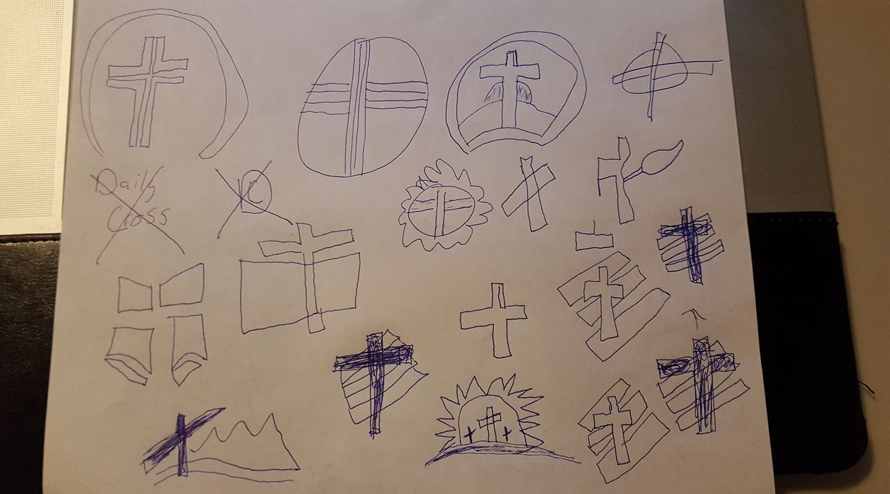The Users Spoke
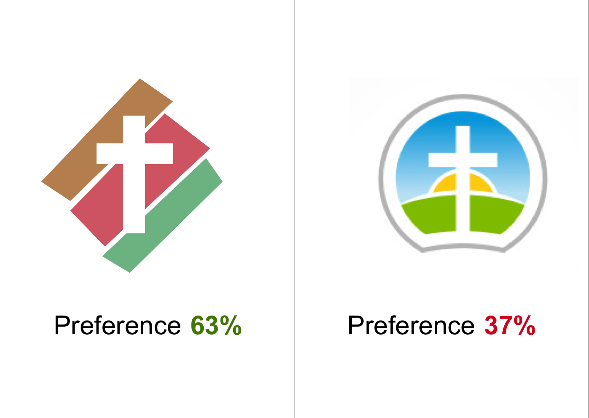Daily Walk’s landing page needed to balance simplicity and relevant information. Since, the system of Daily Walk revolved around time, it was essential to give the user the ability to control it.
I gave this power to the user in two forms:
1) The user could cycle through different days’ Walks by clicking the left of right buttons to either side of the date at the top of the page. This feature really stretched my front-end development ability and Stack Overflow was instrumental in broadening my understanding.
2)The user could control whether they were looking at the morning or evening walk with a simple toggle button.
Originally, I the page display both the morning and evening Walks at once, with the morning Walk stacked on top of the evening Walk. This received negative feedback from users, so the second iteration switched which Walk occupied the top position in the stacking order depending on the time of the day (the evening Walk would stack on top the morning Walk from 3pm to 3am). This was better, but still not user friendly enough. It overwhelmed the user with unneeded information.
The next iteration provided a toggle feature below the date selector. It received much better feedback, saying that it was very intuitive.
Original Daft without a Toggle
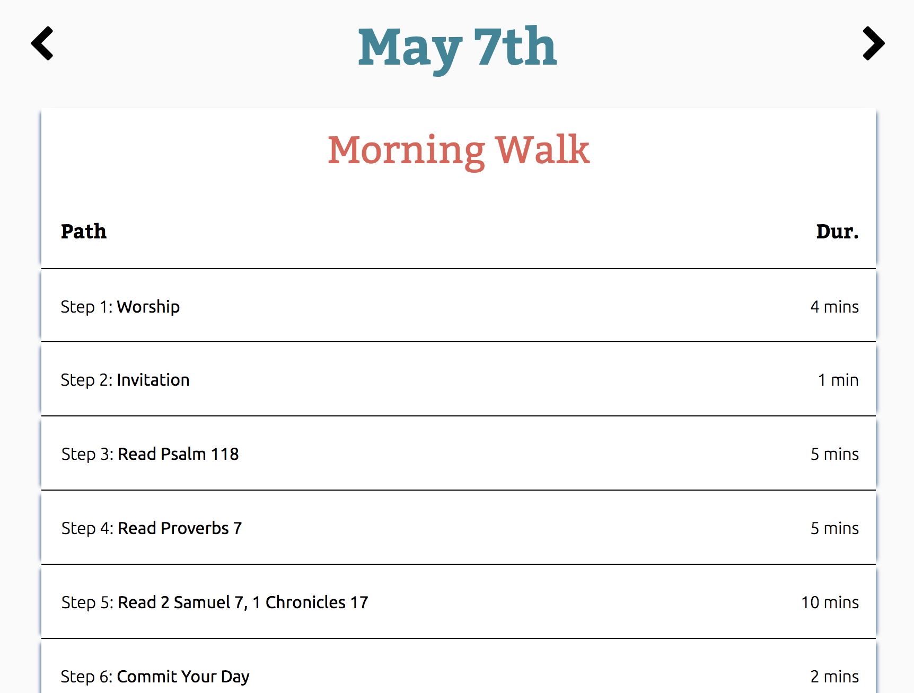Stacking the Walks = Negative User Feedback
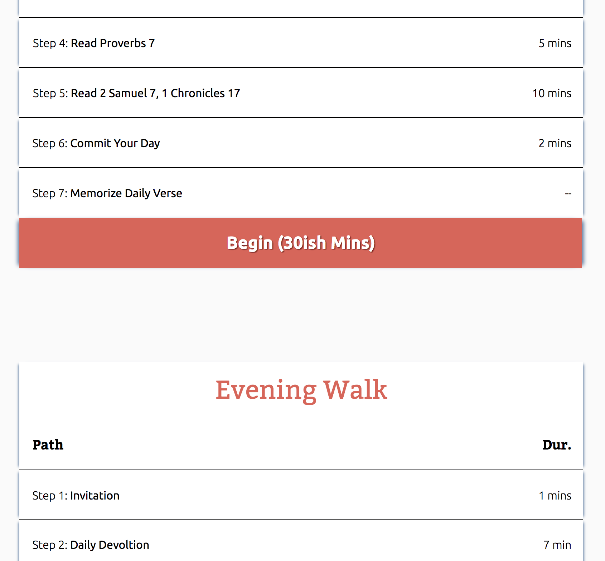A Toggle at the Top was Cleaner & Intuitive
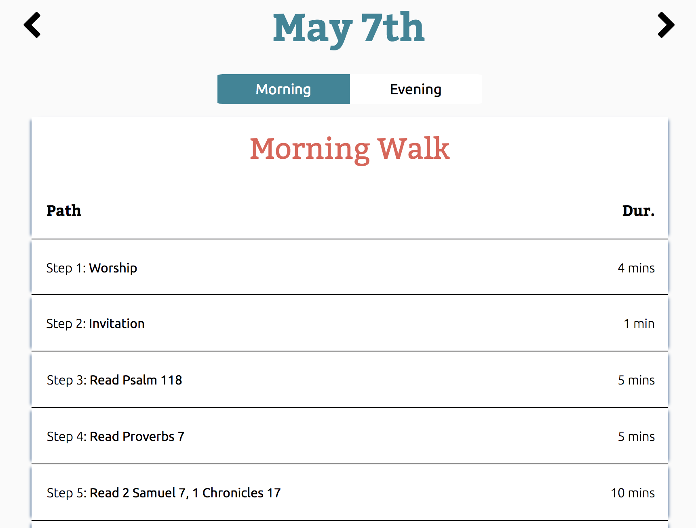Without a CMS, I needed to outsource much on the content for the Step pages. Iframes and content tags provided the portal for this information.
iframes for Content from YouTube
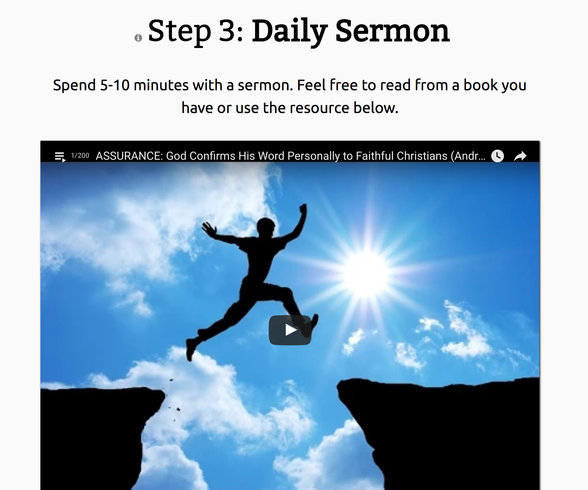Content Tags for Sites that Rejected iframe Transference
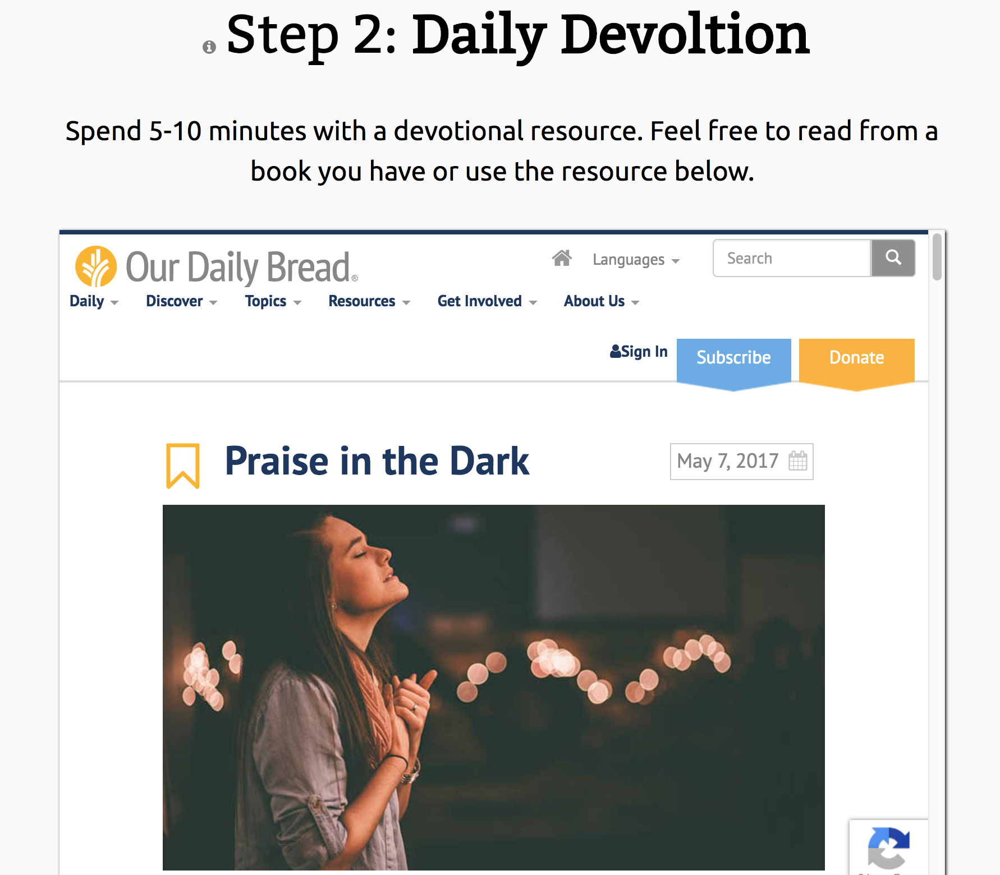Choosing which websites to outsource the content didn’t prove easy. Ultimately, I used my primary audience (pastors, Bible studies, and the deeply devoted) to determine which sites I grabbed from. Many of the people who’d make up this group would either listen in a collective or on the move, so I decide that an easy audio feature needed to accompany the action required for each Step so people to listen commonly or listen while driving home.
This feature would accommodate different types of people and limited resources. For example, the user could choose between traditional hymns or contemporary worship. It also seemed appropriate for certain Steps to offer different resources.
Accomidating Worship Styles was Essential
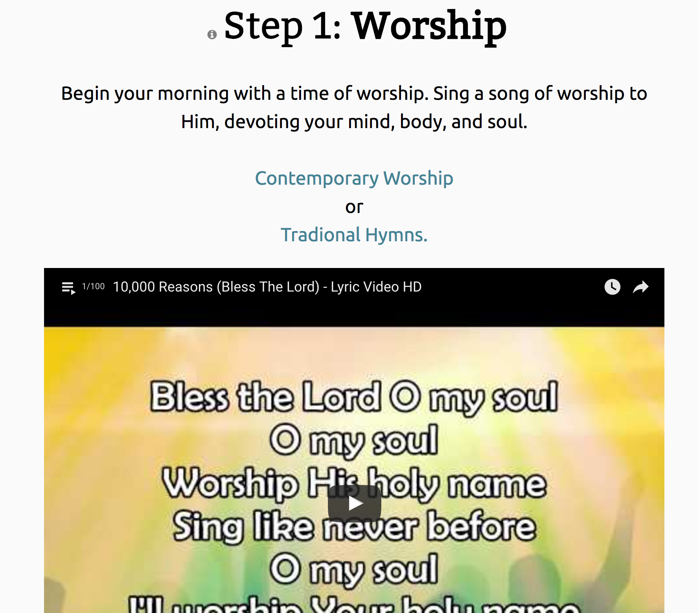Limited Resources were Accomidated by Bottomless Ones
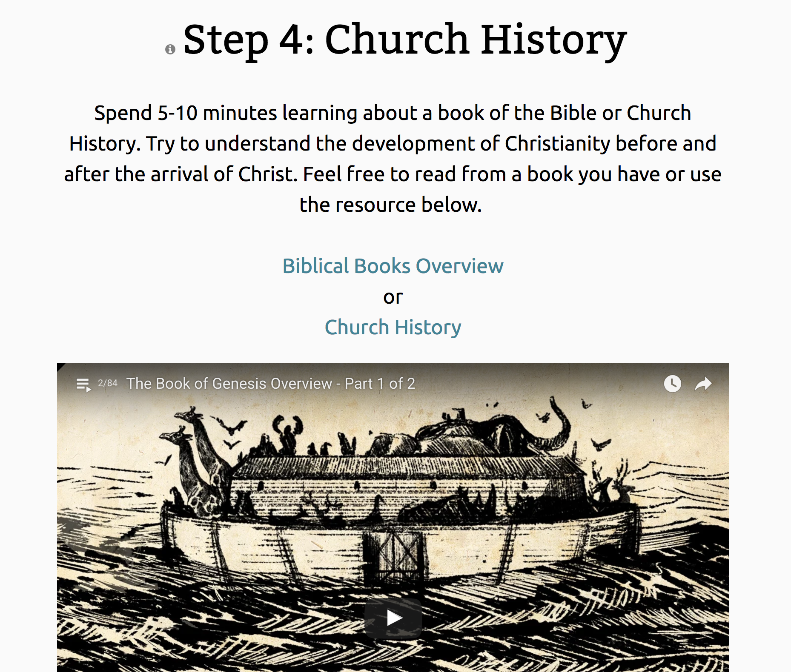Another UI tool I employed for certain pages was the accordion style. Certain Steps (like the prayer Step and offering Step) had multiple actions for the user to perform. Originally, I stacked this content on top of one another in full exposure. After user feedback, I decided to condense these actions into an accordion style, which made the content more digestible.
User Feedback: Too Much for Comfort
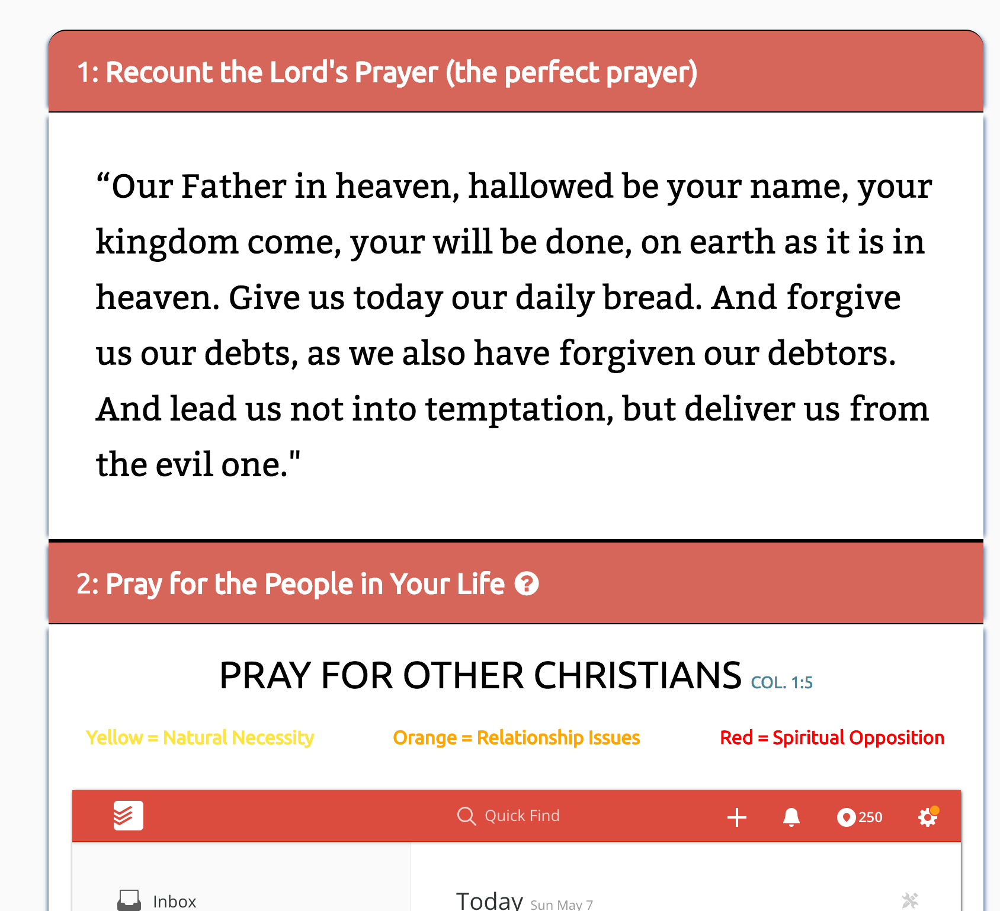Packing the Actions into Boxes Gave a Sense of Control
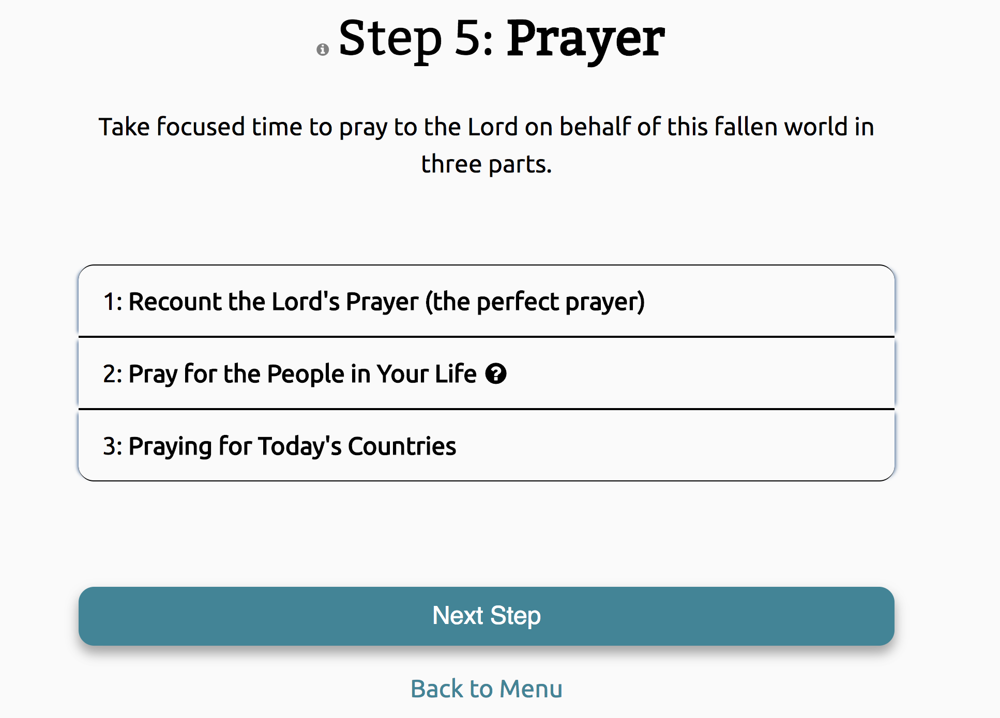It was appropriate to have a page in the application that explained the theological approach of the system. Many wars and factions have developed throughout Christian history concerning the methodology of how humans should relate to their God. Therefore, laying out Daily Walk’s cards on the table was more than essential.
The primary issue I had in developing a page like this was that its content could fill a tome. My goal was to trim it down to its bare essentials and present it in as friendly a manner as possible. My solution consisted of communicating hierarchy with font-size, weights, and color. Also, a handy nav bar at the top helped users to get to the sections that they most desired without scrolling through an ocean of information.
Putting this Information into a Hierarchy was Paramount
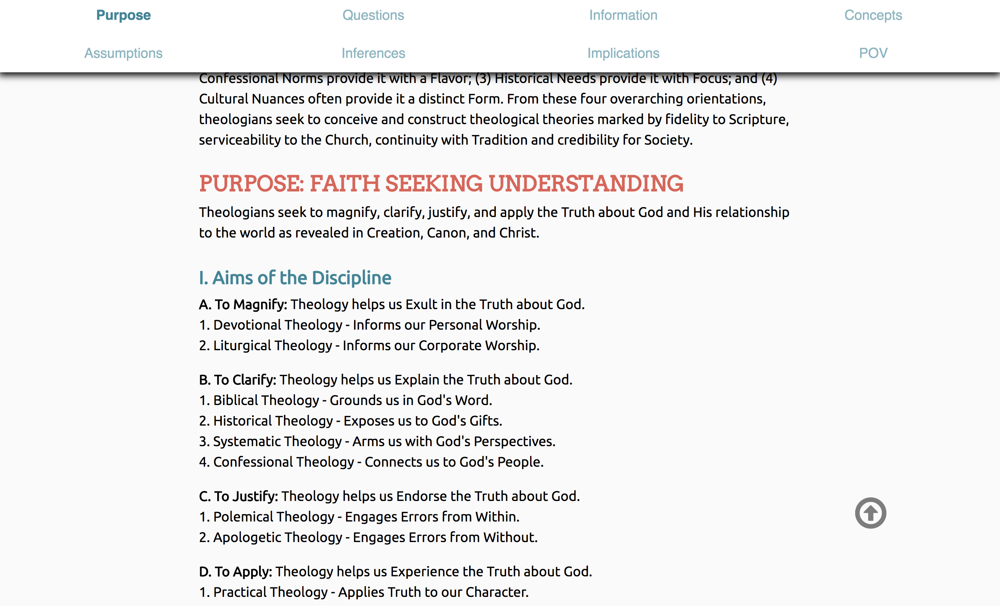To help welcome new users and encourage existing ones, Daily Walk needed tutorial aids. The landing page needed a tour guide to help break down the functionality of the site. I employed the plugin Intro.js which showed the user what to click and where to locate certain pieces of information. I also put this plugin to work for the offering page, which was one of the trickier Steps to explain.
Ordering These Steps Took Some Troubleshooting
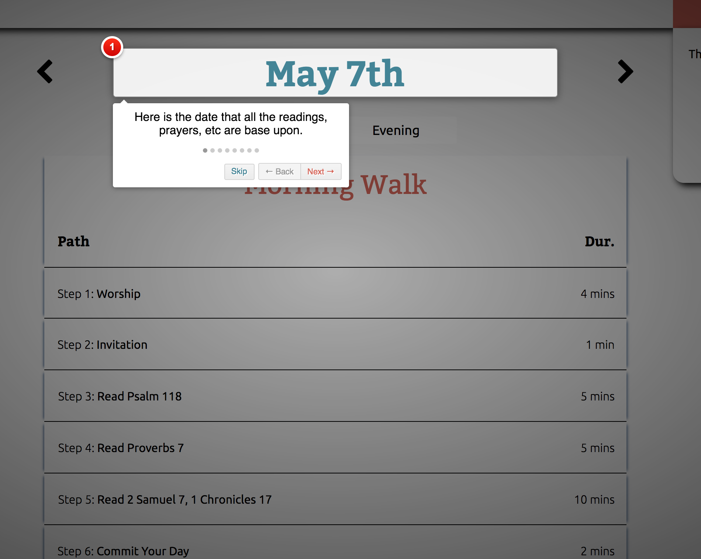Another tutorial aid came in the form of a question mark icon near each Step title. By hovering over the icon, a blurb would appear, explaining the rationale behind the step and how it was instrumental to one’s walk with God. This icon also helped to give biblical backing for certain actions within Steps. Because most Christians consider the Bible to be the final authority, this feature was aligned with audience expectations.
The final type of tutorial aid came in the form of a video. I only used this solution once, but it seemed most appropriate for the Step it supplemented: the prayer lists. The complexity of this step required more leg work than Intro.js could accommodate. This Step needed a visual illustration on how to work the system. Though, I don’t consider myself a voice for radio, I recorded my for audio instruction.

Going into this project, I questioned whether I could accomplish Daily Walk’s basic functionality or if I could present it effectively. On this side of the project, those doubts have subsided.
I was able to make Daily Walk functional by learning more about:
1) Cookies and other means of passing information without a CMS;
2) How to dynamically insert content with JS;
3) Ordering information into tiers of immediate importance.
But most of all, this project taught me the value of a team. By trying to be a one-man-army, I discovered how an army could be formed. By diving into the details of the project, I saw how an entire project could be organized. I now understand more fully the costs of developing in isolation.
I acknowledge that Daily Walk limps across the finishline, for it desperately needs a UX researcher and a back-end dev. And by knowing this project intimately, I feel its weaknesses as my own, and those weakness could have been greatly relieved by the addition of just two more team members. I didn't expect this project to help me understand how a team could be formed, but it certainly did.
Going forward, I’ll be very aware of the unique value that every individual brings to a team and how that reliance on one another is a great source of strength. I guess it is fitting that Daily Walk (an application that draws one’s attention to a higher power) taught me both my unique value and its limitations.